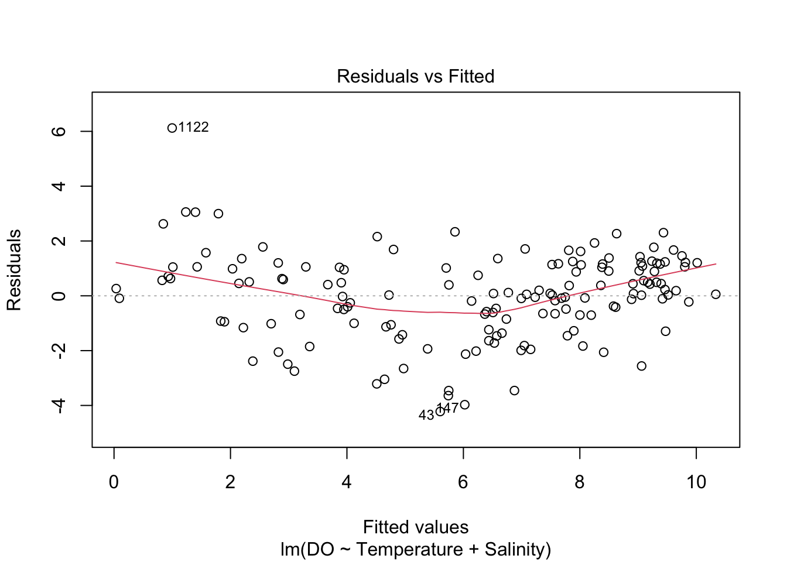

10.2 Linear models with multiple covariates
Investigations are rarely as simple as involving a single response and a single explanatory variable. Here is a more complex example which will be used throughout much of the rest of this chapter to illustrate the general principles behind linear models.
Example: Dissolved oxygen in the River Clyde
The Scottish Environment Protection Agency (SEPA) has a statutory obligation to monitor the state of the environment. As part of that duty, water samples are taken regularly from sampling stations along the Clyde River. Data are available for a twenty year period from the mid-1970’s until the mid-1990’s. A natural measure of water quality is dissolved oxygen (DO). There is interest in identifying the pattern of DO along the river, the nature of any time trends and the relationship between DO and physical variables such as temperature and salinity.
We will read the data using the load function. This loads into our workspace objects which have previously been created and stored in a file in R format, using the save function. In this case, the file contains a single object - a dataframe called clyde. To keep things simple, we will start with data from a single station which lies 6 miles from the city centre.
10.2.1 Model formulation
As ever, creating a helpful plot is a good start. Note that, when applied to a dataframe, the plot function is an efficient way of creating a scatterplot matrix which displays the relationships between all pairs of variables. Here, the variables are ordered to ensure that the response variable DO is conveniently placed first and that Station is excluded as it is redundant for this subset of the data.

The top row of plots show how DO relates to the other variables. There is little evidence of change in mean DO across Year, a strong seasonal effect with a cyclical pattern across Doy and clear reductions in mean DO with increasing values of Temperature and Salinity. It is also worthwhile inspecting the other plots in the array, where a very strong relationship between day of the year and temperature is apparent. The temperature measurement are taken from the water so they have much greater stability than measurements made from the air, which would exhibit much more variability. The relationship between day of the year and temperature is so strong that there is a sense in which they essentially carry the same information. At any particular time of the year the water temperature can be predicted quite accurately. There is therefore a strong argument that only one of these two variables should be included in a model. Temperature is a good candidate, as its relationship with DO is simpler, with a broadly linear pattern. This suggests that an initial model might include the two covariates Temperature and Salinity and that the relationships of these with DO might be described well in linear form. That can be expressed in the model formula:
DO ~ Temperature + Salinity Linear models can be applied in a very wide variety of settings so it is worthwhile considering a general expression which can be adapted to any of the particular situations and contexts we meet. A linear model which relates a response variable \(y\) to a set of covariates \(x_1, \ldots, x_p\) can be written as: \[ y = \beta_0 + \beta_1 x_{1} + \beta_2 x_{2} + \ldots + \beta_p x_{p} + \varepsilon . \] The terms involving the parameters \(\beta_0, \ldots, \beta_p\) for the systematic or structural part of the model. They describe what happens to the mean value of \(y\) as the explanatory variables change. The parameters \(\beta_j (j = 1, \ldots, p)\) can be interpreted as the amount of change in the mean value of \(y\) when \(x_j\) increases by one unit and the other explanatory variables are held fixed. The error term \(\varepsilon\) reflects the fact that data are almost always subject to variation, from natural processes, measurement error and other sources.
10.2.2 Model fitting
Continuing with the general formulation, the model can be expressed in terms of the observed data: \[\begin{eqnarray*} & y_1, x_{11}, x_{21}, \ldots, x_{p1} \\ & y_2, x_{12}, x_{22}, \ldots, x_{p2} \\ & \ldots\\ & y_n, x_{1n}, x_{2n}, \ldots, x_{pn} \end{eqnarray*}\] as: \[ y_i = \beta_0 + \beta_1 x_{1i} + \beta_2 x_{2i} + \ldots + \beta_p x_{pi} + \varepsilon_i . \] where the subscript \(i\) refers to the \(i\)th of the \(n\) observations in the sample. To fit the model, the aim is to choose the values of the parameters which bring the structural part of the model, \(\beta_0 + \beta_1 x_{1i} + \beta_2 x_{2i} + \ldots + \beta_p x_{pi}\), as close as possible to the observed data, \(y_i\). A natural way to measure closeness is through the sum-of-squares: \[ \sum_{i=1}^n \{y_i - (\beta_0 + \beta_1 x_{1i} + \beta_2 x_{2i} + \ldots + \beta_p x_{pi}) \}^2 . \] The principle of least squares chooses the values of \(\beta_0, \ldots, \beta_p\) which minimise this sum-of-squares. The minimising values are the least squares estimates, denoted by \(\hat{\beta}_0, \ldots, \hat{\beta}_p\). The ‘hat’ notation indicates that these are estimates of the true, underlying values \(\beta_0, \ldots, \beta_p\). There is a great deal of well developed theory which is available to find the estimates efficiently.
Our initial model for the DO data can be fitted through the lm function as:
## Estimate Std. Error t value Pr(>|t|)
## (Intercept) 11.4417324 0.34234313 33.421826 7.707445e-71
## Temperature -0.2888456 0.03542437 -8.153866 1.380703e-13
## Salinity -0.4007846 0.03634180 -11.028199 5.117585e-21The fitted linear model can be written as
\[
y = \hat{\beta_0} + \hat{\beta_1} x_{1} + \hat{\beta_1} x_{2} .
\]
which corresponds to a plane in 3D. This plane has been superimposed onto a 3D plot of the data below. The plane slopes in both the Temperature and the Salinity axes so the effects of these two variables are described simultaneously.
The green vertical lines show the discrepancies between the observed data (red points) and the fitted model. The points at which these lines meet the plane are referred to as the fitted values, defined as \[ \hat{y}_i = \hat{\beta_0} + \hat{\beta_1} x_{1i} + \hat{\beta_1} x_{2i} . \] The discrepancies between the data and the fitted model, referred to as residuals are then \[ r_i = y_i - \hat{y}_i . \]
The plot below uses the rp.lm function from the rpanel package to illustrate the fitted model. This function is designed to illustrate and explore various issues of linear models in simple cases where there are no more than two predictor variables. Here the three-dimensional display can be rotated in the web version of the book or in R on your own computer. The model corresponds to a plane which tilts in both the Temperature and Salinity directions. The coefficients discussed above give the rate of tilt. Vertical lines for the residuals have also been added.
10.2.3 Model checking
Before we rush into using our fitted model to draw conclusions, it would be wise to check that it does indeed fit the data well, providing a good description of the observed data.
This model has a number of potential assumptions and it is helpful to make these explicit.
- The relationship between the mean value of \(y\) and each \(x_j\) is linear (a straight line) if the other explanatory variables are held fixed. A consequence is that the error term \(\varepsilon\) is assumed to have mean \(0\).
- In order to draw useful conclusions it is very helpful to make an assumption about the distribution of the error term. This is usually assumed to be Normal.
- A further convenient assumption is that the variance of the error term is the same for all observations and indeed at any future observations with different values of the explanatory variables.
- Another assumption which it is helpful to make is that the error terms are independent. This means that knowing the value of one particular value \(\varepsilon_i\) does not give us any information about any other value \(\varepsilon_j\).
Notice that all four of the model assumptions listed above can be expressed as statements about the error terms \(\varepsilon_i\).
We have fitted values \(\hat{y}_i\) and residuals \(\hat{\varepsilon}_i\) \[\begin{eqnarray*} \hat{y}_i & = & \hat{\beta}_0 + \hat{\beta}_1 x_{1i} + \ldots + \hat{\beta}_p x_{pi} \\ \hat{\varepsilon}_i & = & y_i - \hat{y}_i . \end{eqnarray*}\] If the assumptions are valid then a plot of the residuals against the fitted values should show only random variation, without any systematic patterns in either location or scale.



A normal probability plot is designed to show an approximately straight line when data are normally distributed and so it can be applied to the residuals to check normality.
There are one or two issues to consider here. The plots of residuals versus fitted values may suggest a little curvature. There are also one or two observations which are unusual. We may need to revisit these later.
10.2.4 Inference on coefficients
Since the estimates are derived from the observed data, they are themselves influenced by the random variation on the data. It is extremely useful to measure the precision of the estimates through their estimated standard deviations, known in this context as the standard errors. When we ask for a summary of a fitted model, this will produce a variety of summary information, including a table of parameter estimates and standard errors, as in the table printed above.
Armed with an estimate \(\hat{\beta}_j\) of the parameter \(\beta_j\), plus a standard error \(s.e.(\hat{\beta}_j)\), an approximate 95% confidence interval for \(\beta_j\) can be constructed as \((\hat{\beta}_j \pm 2 \ s.e.(\hat{\beta}_j))\), with the more precise version: \[ (\hat{\beta}_j \pm t_{n-(p+1); 0.975} \ s.e.(\hat{\beta}_j)). \] where \(df\) denotes the degrees of freedom, namely the numbers of parameters, of the model. The confidence interval on the left is a rather rough and ready, approximate one, using two standard errors. The interval on the right provides a more accurate version, where \(t(n-df; 0.975)\) denotes the upper percentile of the \(t_{n-df}\) distribution beyond which lies probability \(0.025\). A confidence interval can be interpreted informally as a range of plausible values for the true, but unknown, parameter.
The summary function provides useful information on the estimated parameters of the model, among other things. The confint function in `R is a useful way of producing confidence intervals.
## Estimate Std. Error t value Pr(>|t|)
## (Intercept) 11.4417324 0.34234313 33.421826 7.707445e-71
## Temperature -0.2888456 0.03542437 -8.153866 1.380703e-13
## Salinity -0.4007846 0.03634180 -11.028199 5.117585e-21## 2.5 % 97.5 %
## (Intercept) 10.7652204 12.1182443
## Temperature -0.3588485 -0.2188427
## Salinity -0.4726005 -0.3289687Confidence intervals are of immediate use because hypotheses of interest can often be formulated as simple statements about parameters. For example, if variables \(x_j\) is unrelated to the mean value of \(y\) then this corresponds to \(\beta_j = 0\). If a confidence interval for \(\beta_j\) does not contain the value \(0\) then there is convincing evidence that the term involving \(\beta_j\) does contribute to the model. However, if the confidence interval does contain the value \(0\) then we would have justification for removing this term from the model.
There are no surprises in the confidence intervals for Temperature and Salinity as it was clear from the intial plots that these variables have a strong relationship with DO. It is more interesting to investigate possible effects of Year now that the strong effects of other variables have been accounted for.
model_with_year <- lm(DO ~ Year + Temperature + Salinity, data = clyde.sub)
summary(model_with_year)$coefficients## Estimate Std. Error t value Pr(>|t|)
## (Intercept) -188.5669174 35.78842019 -5.268937 4.795096e-07
## Year 0.1008971 0.01805327 5.588854 1.078251e-07
## Temperature -0.3199249 0.03275569 -9.767004 1.124808e-17
## Salinity -0.3686144 0.03361273 -10.966511 8.037259e-21## 2.5 % 97.5 %
## Year 0.06521962 0.1365746Interestingly, there is now evidence of an increase in DO with Year. The plot below helps in understanding what is happening here. As we cannot easily view the effects of three variables simultaneously, we will consider a model with Year and Temperature for illustration. If the plot below is rotated to show DO against Year on the front face this replicates the scatterplot at the start of the chapter, with huge variation and little evidence of a relationship evident. Rotating the plot shows the large amount of variation which is accounted for by Temperature, allowing a small but noticeable effect of Year to be seen.
An equivalent analysis involves the construction of the quantity \[ \hat{\beta}_j / s.e.(\hat{\beta}_j) , \] known as the t-statistic. This is used in a formal test with the null hypothesis that \(\beta_j = 0\). If the t-statistic is greater than \(t(n-df; 0.975)\) (or the more rough-and-ready value \(2\)) then we have significant evidence that this term should be retained in the model.
The small p-value for Year can be seen in the table of coefficients above. This is simply a re-expression of the conclusions drawn from the confidence interval.
10.2.5 Comparing models
It is often convenient to compare two models which provide competing descriptions of the data. The smaller model, containing a subset of the terms of the larger one, is referred to as the null hypothesis. A hypothesis test can be carried out by comparing the residual sum-of-squares \[ RSS = \sum_{i=1}^n \{y_i - (\hat{\beta}_0 + \hat{\beta}_1 x_{1i} + \hat{\beta}_2 x_{2i} + \ldots + \hat{\beta}_p x_{pi}) \}^2 \] for each model. The RSS quantifies the degree to which the model fits the observed data. For two `nested’ models with residual sums-of-squares \(RSS_0\) and \(RSS_1\), a hypothesis test can be carried out by referring the F-statistic \[ F = \frac{(RSS_0 - RSS_1) / (df_1 - df_0)}{RSS_1 / (n - df_1)} \] to an \(F_{df_1 - df_0, n - df_1}\) distribution. Here \(df_0\) and \(df_1\) denote the degrees of freedom, namely the numbers of parameters, of the two models.
model1 <- lm(DO ~ Temperature + Salinity, data = clyde.sub)
model2 <- lm(DO ~ Year + Temperature + Salinity, data = clyde.sub)
anova(model1, model2)## Analysis of Variance Table
##
## Model 1: DO ~ Temperature + Salinity
## Model 2: DO ~ Year + Temperature + Salinity
## Res.Df RSS Df Sum of Sq F Pr(>F)
## 1 148 363.18
## 2 147 299.53 1 63.646 31.235 1.078e-07 ***
## ---
## Signif. codes: 0 '***' 0.001 '**' 0.01 '*' 0.05 '.' 0.1 ' ' 1The very small p-value suggests that, after adjusting for Temperature and Salinity, there is still information in Year which contributes to the explanation of the patters in DO. (This confirms what we saw from the table of regression coefficients earlier.)